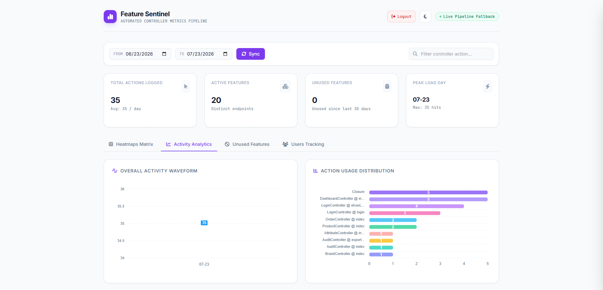

Zero-setup tracking
Automatically attaches tracking middleware to web and API route groups. No edits to your route files or HTTP kernel.
FEATURE_HEATMAP_AUTO_TRACK=true
Track controllers, routes, users, and feature adoption in your Laravel application—with a fast visual dashboard and zero manual route setup.
composer require farukcoder/laravel-feature-heatmap

Install the package, run migrations, and get a clear picture of real application usage.
Automatically attaches tracking middleware to web and API route groups. No edits to your route files or HTTP kernel.
Compare feature usage by date and by authenticated user with an easy-to-scan matrix.
See total hits, distinct features, last activity, and detailed per-user usage breakdowns.
Export individual user activity reports directly from the dashboard.
Find endpoints that have been dormant for 30+ days and remove technical debt with confidence.
Dispatch tracking asynchronously, aggregate daily summaries, and prune raw logs to keep production responsive.
Switch between heatmaps, activity charts, unused feature reports, and user tracking in one interface.

composer require
farukcoder/laravel-feature-heatmapphp artisan migrateCreates optimized raw log and daily summary tables.
/feature-heatmapOpen the protected dashboard and start finding usage patterns.
Queue-backed logging keeps requests fast. Scheduled aggregation turns raw events into lightweight daily summaries, while pruning keeps tables lean.
use Illuminate\Support\Facades\Schedule;
Schedule::command(
'feature-heatmap:aggregate --prune'
)->dailyAt('01:00');Get the package running in your Laravel application today.